Fazantenborst
In truffelboter, zacht gegaard
27,50Een gezellige bar, heerlijke zitjes en elke dag de keuze uit drie verse gerechten. Binnenlopen voor een borrel kan altijd, voor het diner reserveer je even.
Bij 1723 Voorburg voel je je snel op je gemak. Al bijna tien jaar koken wij met dagverse producten, lokaal ingekocht en met zo min mogelijk verspilling. Wist je dat een derde van alle voedselproductie wereldwijd wordt verspild? Zonde, denken wij.
Daarom werken we elke dag met de keuze uit drie gerechten. Geef bij je reservering aan of je vlees, vis of vegetarisch wilt, dan gaat onze chef voor je aan de slag. Omdat we duurzaam werken, houden we de maaltijden ook betaalbaar.
Natuurlijk kun je ook gewoon binnenwandelen voor een borrel, een speciaalbier van de tap of een goed glas wijn. Met veertig verschillende gins is je gin-tonic altijd goed.
Genieten op een 'Cheers-achtige' manier. Tot snel!
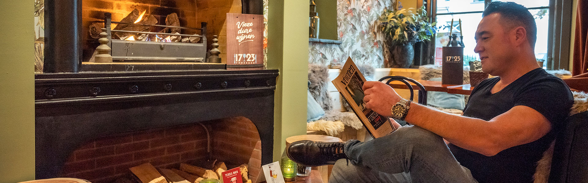
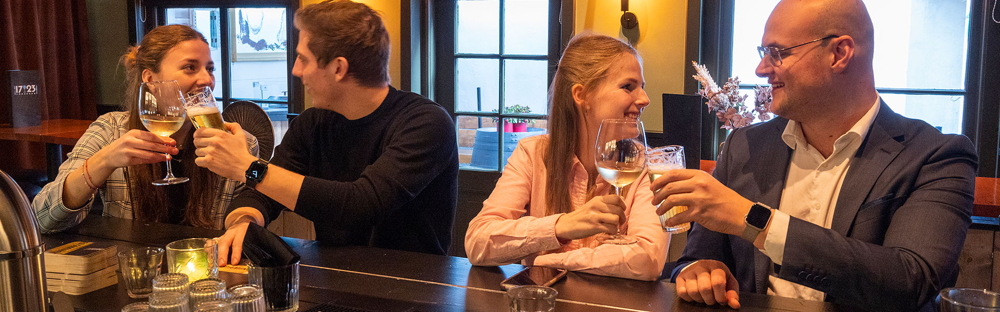
Voor een borrel met snack kun je altijd binnenlopen. Speciaalbieren van de tap, wijnen uit alle windstreken en een imposant aanbod gedistilleerd.
December bij 1723
De gezelligste dagen van het jaar vier je bij 1723 Voorburg. We trappen af met Lichtjesavond op donderdag 24 december en gaan door met een kerstmenu op Eerste en Tweede Kerstdag. Reserveer via de reserveerknop of bel Sandra op 070 2015 003.
Lichtjesavond in het Huygenskwartier: extra biefstuk- & kreeftenavond. Biefstuk & jus of hele Canadese kreeft, beide met Caesar salade, huisfrieten en dragonmayonaise, of ravioli vega.
Shift 1: 17.30 tot 19.30 uur
Shift 2: vanaf 19.30 uur tot gezellig
Borrel- & snackavond: we luiden 2026 uit! Wandel tussen 16 en 17 uur binnen. Met een grotere groep? Reserveer even via Sandra, 070 2015 003 of info@1723.nl.
Gesloten vanwege een besloten feest.
Gesloten.
Dat 'simpele' gerechten ook gewoon lekker kunnen zijn bewijst Chef Pieter. Niet te veel poespas, maar eerlijk, vers en goed bereid eten voor een meer dan prima prijs. De ambiance en service bij 1723 zijn fantastisch. We komen snel terug in deze culinaire huiskamer.Jan Willem
Super leuke locatie met echt goed eten voor een redelijke prijs! Geen heel uitgebreide kaart maar genoeg te kiezen. Bediening een leuke mix tussen ervaring en jonge mensen.Marco
Een modern stijlvol en knus restaurant waar je welkom bent en service uitmuntend is. Een heerlijk ontspannen sfeer met heerlijke gerechten en dranken.Monique
Bron: bookdinners.nl
Kijk: het is heerlijk toeven op ons terras in de Kerkstraat. En als het buiten nat is, staan binnen de glazen klaar.
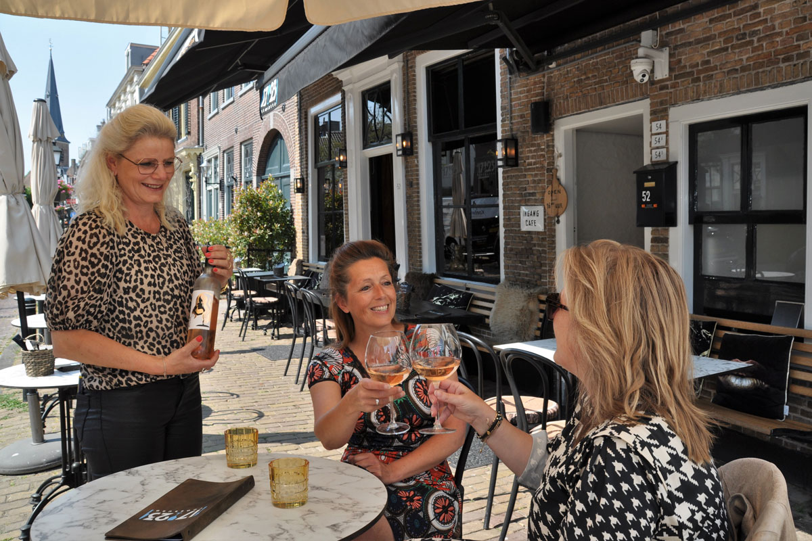
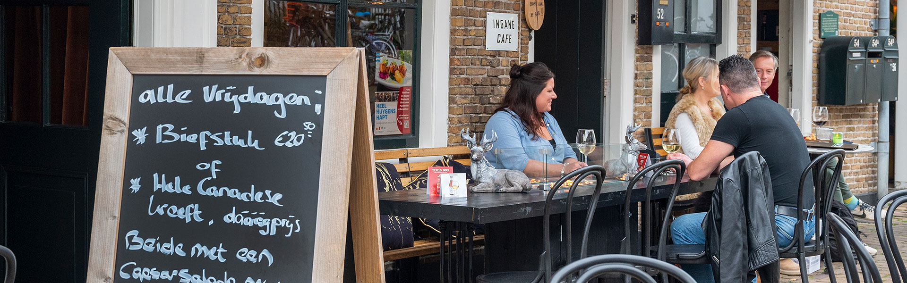
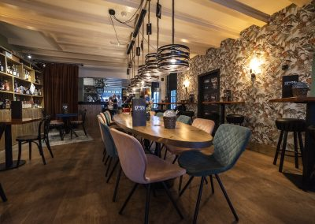
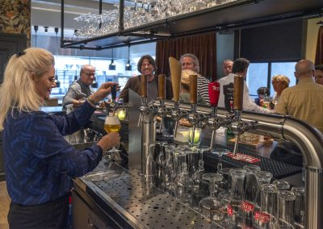
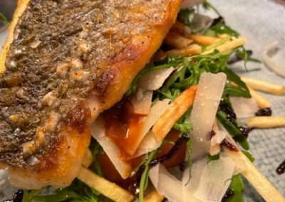
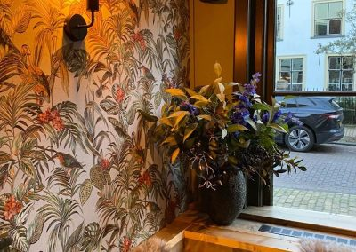
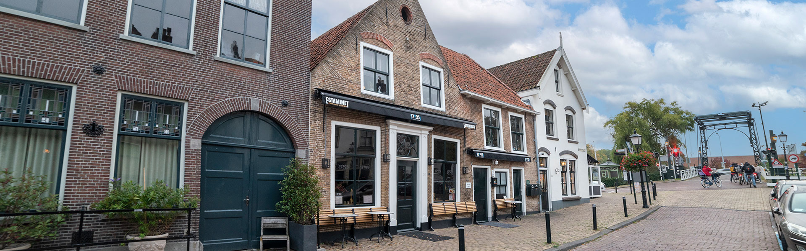
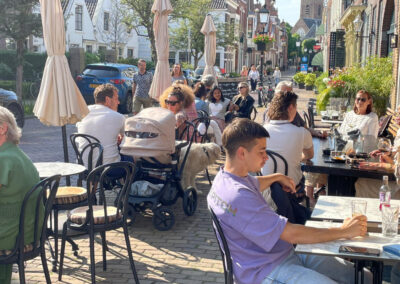
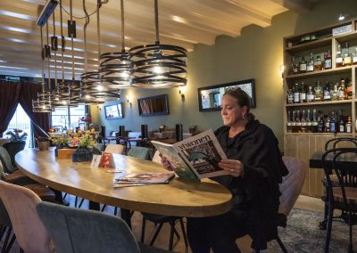
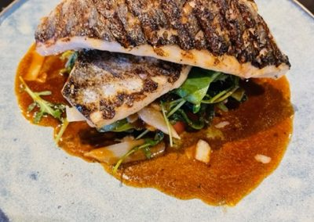
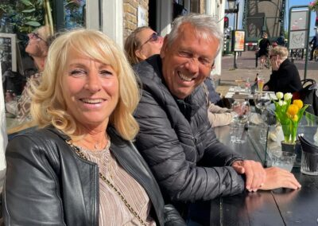
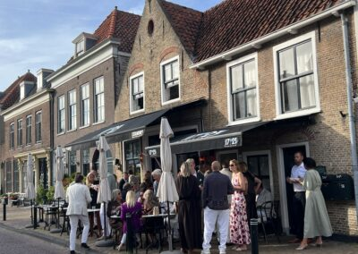
Lichtjesavond op 24 december en een kerstmenu op Eerste en Tweede Kerstdag.
Bekijk het kerstprogrammaRegen is precies het moment om de deur uit te gaan. Bij 1723 staan de glazen klaar en is de sfeer warm.
Lees meerKom je over het water? In de Huygens Haven leg je eenvoudig aan en loop je zo de Kerkstraat in voor een borrel of diner.
Al het nieuwsWerken bij 1723 voelt als thuiskomen, door de gezellige bar en de klik met het enthousiaste team. Een leuke plek in hartje Huygenskwartier, waar je veel kunt leren van ervaren horecamensen.
Kom gerust langs voor een kennismakingsgesprek, of bel of mail ons.
Mail info@1723.nl| Dinsdag t/m donderdag | 16.00 - 23.00 |
| Vrijdag en zaterdag | 16.00 - 00.00 |
| Zondag en maandag | gesloten |
Borrel en snack vanaf 16.00 uur, diner vanaf 18.00 uur.
Graag reserveren voor het diner. Voor een borrel met snack kun je altijd binnenlopen.
Je reservering is definitief als we die telefonisch of per mail hebben bevestigd. Voor de dag zelf reserveer je het liefst telefonisch. Geen bevestiging gezien? Kijk ook even in je spambox.
Reserveer online